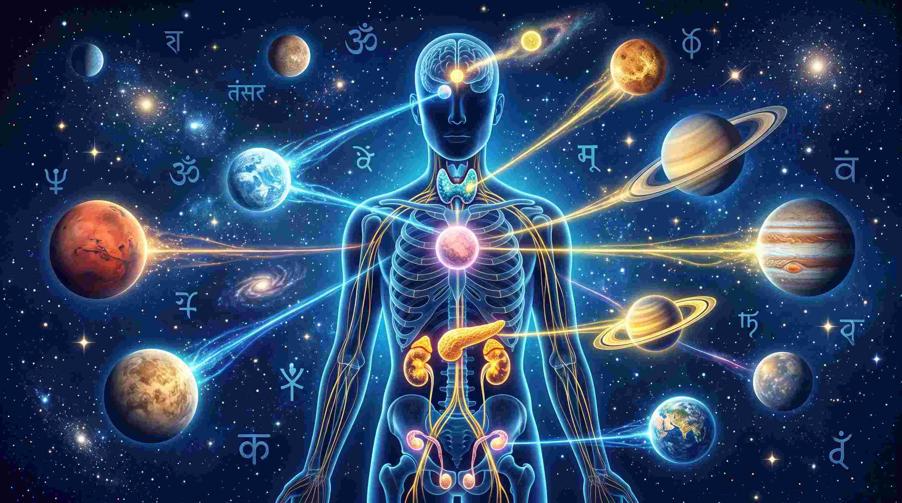
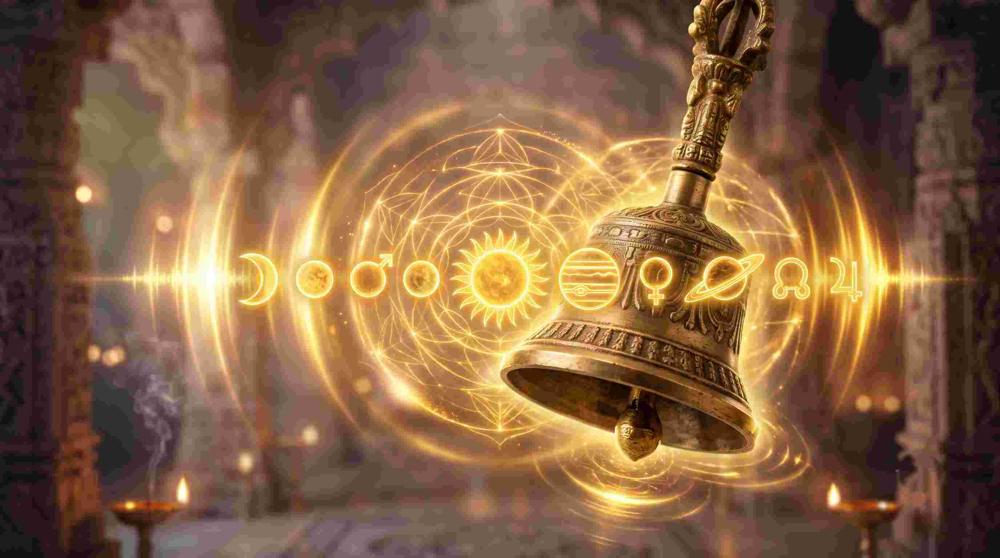

महर्षि वेद व्यास द्वारा रचित नवग्रह स्तोत्र (Navagraha Stotra) हिंदू धर्म का एक अत्यंत महत्वपूर्ण और शक्तिशाली स्तोत्र है। [cite: 9] आम तौर पर लोग इस स्तोत्र का पाठ तब करते हैं जब उनकी कुंडली में कोई ग्रह खराब चल रहा हो। लेकिन एक मेडिकल स्टूडेंट (MBBS) के नजरिए से, मैं आपको बताना चाहता हूँ कि यह स्तोत्र केवल बाहर अंतरिक्ष में मौजूद 9 ग्रहों को खुश करने के लिए नहीं है; यह आपके शरीर के अंदर मौजूद 9 एंडोक्राइन ग्रंथियों (Endocrine Glands) को ठीक करने का एक 'वाइब्रेशनल टूल' (Vibrational Tool) है।
हमारा शरीर रसायनों (Hormones) और विद्युत तरंगों (Frequencies) पर चलता है। जब आप संस्कृत के इन विशिष्ट अक्षरों (Syllables) का उच्चारण करते हैं, तो सिमैटिक्स (Cymatics - ध्वनि का विज्ञान) के माध्यम से आपके मस्तिष्क और शरीर में एक विशिष्ट वाइब्रेशन पैदा होती है, जो आपके हार्मोनल असंतुलन (Hormonal Imbalance) को ठीक करती है। आइए, इस महान स्तोत्र का सम्पूर्ण पाठ और इसका वैज्ञानिक/मेडिकल अर्थ समझते हैं। [cite: 9]
"नवग्रह स्तोत्र न केवल ग्रहों की शांति के लिए है बल्कि यह मनुष्य को आंतरिक शक्ति और सकारात्मक ऊर्जा भी प्रदान करता है।" [cite: 9]

नवग्रह स्तोत्र: सम्पूर्ण पाठ और मेडिकल-एस्ट्रो अर्थ
१. सूर्य (Surya)
जावा कुशुम संकाशं काश्यपेयं महाद्युतिम्।
तमोऽरिं सर्वपापघ्नं प्रणतोऽस्मि दिवाकरम्॥
अर्थ: जो जवा (लाल) पुष्प के समान तेजस्वी हैं, कश्यप मुनि के पुत्र हैं, अंधकार के शत्रु हैं, सभी पापों का नाश करने वाले हैं — उन दिवाकर को मैं प्रणाम करता हूँ। [cite: 9]
मेडिकल/वैज्ञानिक संबंध: सूर्य आपकी 'पीनियल ग्रंथि' (Pineal Gland) और 'हृदय' (Heart) का प्रतिनिधित्व करता है। इस श्लोक की वाइब्रेशन आपके शरीर में प्राण ऊर्जा (Vitality) बढ़ाती है और कार्डियोवैस्कुलर (Cardiovascular) सिस्टम को मजबूत करती है।
२. चन्द्र (Chandra)
दधिशङ्खतुषाराभं क्षीरोदर्णवसंभवम्।
नमामि शशिनं सोमं शम्भोर्मुकुटभूषणम्॥
अर्थ: जो दही, शंख और हिम के समान श्वेत हैं, क्षीरसागर से उत्पन्न हुए हैं, भगवान शंकर के मस्तक के भूषण हैं — उस चन्द्रदेव को मैं नमस्कार करता हूँ। [cite: 9]
मेडिकल/वैज्ञानिक संबंध: चंद्रमा 'हाइपोथैलेमस' (Hypothalamus) और शरीर के सभी तरल पदार्थों (Body Fluids/Blood Pressure) को नियंत्रित करता है। यह श्लोक अवसाद (Depression) और एंग्जायटी को शांत करने के लिए एक प्राकृतिक ट्रैंक्विलाइज़र (Tranquilizer) का काम करता है।
३. मंगल (Mangala)
धरनीगर्भसंभूतं विद्युत्कान्तिसमप्रभम्।
कुमारं शक्तिहस्तं तं मङ्गलं प्रणमाम्यहम्॥
अर्थ: जो पृथ्वी के गर्भ से उत्पन्न हुए हैं, विद्युत के समान चमकते हैं, अपने हाथ में शक्ति (भाला) धारण किए हुए हैं — उन मंगलदेव को मैं प्रणाम करता हूँ। [cite: 9]
मेडिकल/वैज्ञानिक संबंध: मंगल 'एड्रेनल ग्रंथि' (Adrenal Gland) और बोन मैरो (Bone Marrow) से जुड़ा है। जब शरीर में ऊर्जा की कमी हो या रक्त संबंधी (Blood disorders) बीमारियां हों, तो यह श्लोक एड्रेनालाईन हार्मोन को संतुलित करता है।
४. बुध (Budha)
प्रियङ्गुकलिकाश्यामं रूपेणप्रतिमं बुधम्।
सौम्यं सौम्यगुणोपेतं तं बुधं प्रणमाम्यहम्॥
अर्थ: जो काले पुष्प की कलिका के समान श्यामवर्ण हैं, अत्यंत सुंदर और सौम्य स्वभाव के हैं — उस बुधदेव को मैं नमस्कार करता हूँ। [cite: 9]
मेडिकल/वैज्ञानिक संबंध: बुध आपकी 'थायरॉइड ग्रंथि' (Thyroid Gland) और पूरे नर्वस सिस्टम (Nervous System) का संचालक है। बोलने में हकलाहट (Stuttering), तंत्रिका तनाव और थायरॉइड असंतुलन में इस श्लोक का नाद (Sound) बहुत प्रभावी है।
५. बृहस्पति (Brihaspati)
देवानांच ऋषीणां च गुरुं काञ्चनसन्निभम्।
बुद्धिभूतं त्रिलोकस्य तं नमामि बृहस्पतिम्॥
अर्थ: जो देवताओं और ऋषियों के गुरु हैं, स्वर्ण के समान दीप्तिमान हैं, तीनों लोकों की बुद्धि स्वरूप हैं — उस बृहस्पति देव को मैं नमस्कार करता हूँ। [cite: 9]
मेडिकल/वैज्ञानिक संबंध: गुरु 'पिट्यूटरी ग्रंथि' (Pituitary Gland - मास्टर ग्लैंड) और लिवर (Liver) का स्वामी है। यह श्लोक आपके चयापचय (Metabolism) और शरीर की वृद्धि (Growth hormones) को नियंत्रित करने में मदद करता है।
६. शुक्र (Shukra)
हिमकुण्डमृणालाभं दैत्यानां परमं गुरुम्।
सर्वशास्त्रप्रवक्तारं भार्गवं प्रणमाम्यहम्॥
अर्थ: जो बर्फ और कमल की डंडी के समान श्वेत हैं, दैत्यों के परम गुरु हैं, और सभी शास्त्रों के प्रवक्ता हैं — उस भार्गव (शुक्राचार्य) को मैं प्रणाम करता हूँ। [cite: 9]
मेडिकल/वैज्ञानिक संबंध: शुक्र 'थाइमस ग्रंथि' (Thymus) और 'प्रजनन तंत्र' (Reproductive System) का कारक है। यौन रोग, हार्मोनल असंतुलन (PCOS/Testosterone issues) और त्वचा (Skin) की चमक के लिए यह श्लोक अमोघ है।
७. शनि (Shani)
नीलाञ्जनसमाभासं रविपुत्रं यमाग्रजम्।
छायामार्तण्डसंभूतं तं नमामि शनैश्चरम्॥
अर्थ: जो काजल के समान काले हैं, सूर्यदेव के पुत्र हैं, यमराज के बड़े भाई हैं, और छाया देवी से उत्पन्न हुए हैं — उस शनिदेव को मैं प्रणाम करता हूँ। [cite: 9]
मेडिकल/वैज्ञानिक संबंध: शनि आपकी 'बेसल गैन्ग्लिया' (Basal Ganglia), कंकाल तंत्र (Skeletal system/Bones), और दांतों का स्वामी है। क्रॉनिक बीमारियों (जो लंबे समय तक चलती हैं), गठिया (Arthritis) और मांसपेशियों के दर्द में यह श्लोक सेल्युलर (Cellular) स्तर पर हीलिंग करता है।
८. राहु (Rahu)
अर्धकायं महावीर्यं चन्द्रादित्यविमर्दनम्।
सिंहिकागर्भसंभूतं तं राहुं प्रणमाम्यहम्॥
अर्थ: जो आधे शरीर वाले हैं, अत्यंत पराक्रमी हैं, चन्द्र और सूर्य को ग्रसने वाले हैं, और सिंहिका के गर्भ से उत्पन्न हुए हैं — उस राहु को मैं नमस्कार करता हूँ। [cite: 9]
मेडिकल/वैज्ञानिक संबंध: राहु 'गट माइक्रोबायोम' (Gut Microbiome) और रहस्यमयी वायरल/मानसिक बीमारियों (Schizophrenia) का कारक है। यह श्लोक भ्रमित न्यूरल पाथवेज (Confused neural pathways) को फिर से अलाइन (Align) करता है।
९. केतु (Ketu)
पलाशपुष्पसङ्काशं तारकाग्रहमस्तकम्।
रौद्रं रौद्रात्मकं घोरं तं केतुं प्रणमाम्यहम्॥
अर्थ: जो पलाश पुष्प के समान लाल हैं, ग्रहों के समूह में सिररहित हैं, रौद्र स्वभाव वाले और भयंकर हैं — उस केतु देव को मैं प्रणाम करता हूँ। [cite: 9]
मेडिकल/वैज्ञानिक संबंध: केतु हमारे 'जेनेटिक्स' (DNA / RNA) और ऑटोइम्यून (Autoimmune) प्रतिक्रियाओं को नियंत्रित करता है। इसका पाठ आनुवांशिक (Genetic) और पैतृक बीमारियों के प्रभाव को कम करने में सहायक है।
समापन श्लोक (फलश्रुति)
इति व्यासमुखोद्गीतं यः पठेन्नवग्रहं स्तवम्।
विद्यां आरोग्यं पुत्रांश्च सर्वं लभते नरः॥
अर्थ: जो मनुष्य व्यासजी के मुख से निकले इस नवग्रह स्तोत्र का पाठ करता है, वह विद्या, आरोग्य (स्वास्थ्य), और पुत्रादि सुख की प्राप्ति करता है। [cite: 9]

नवग्रह स्तोत्र पाठ की अचूक और वैज्ञानिक विधि
- समय (Timing): इस स्तोत्र का पाठ हमेशा प्रातः काल सूर्योदय (Sunrise) के समय करना चाहिए। इस समय वातावरण में अल्फा और थीटा (Alpha & Theta) तरंगे होती हैं, जो मस्तिष्क को श्लोक की वाइब्रेशन ग्रहण करने के लिए सबसे अधिक ग्रहणशील (Receptive) बनाती हैं।
- दिशा (Direction): पूर्व (East) या उत्तर (North) दिशा की ओर मुख करके बैठें। यह पृथ्वी के चुंबकीय क्षेत्र (Earth's Magnetic Field) के साथ आपके न्यूरोलॉजिकल सिस्टम को अलाइन (Align) करता है।
- स्वर और लय (Acoustics): संस्कृत के श्लोकों को केवल पढ़ना नहीं है, बल्कि 'उच्चारण' करना है। गले से निकलने वाला स्पष्ट नाद (Sound Vibration) ही आपके ग्लैंड्स (Glands) को उत्तेजित करेगा। [cite: 9]
- दैनिक अभ्यास: नियमित रूप से इसका 1, 11 या 108 बार पाठ करें। यदि आपकी कुंडली में कोई विशिष्ट ग्रह नीच (Debilitated) का है, तो उस ग्रह के श्लोक पर अधिक जोर (Focus) दें। [cite: 9]
निष्कर्ष: ज्योतिष तर्क का दृष्टिकोण
महर्षि वेद व्यास ने नवग्रह स्तोत्र की रचना केवल ग्रहों के डर से बचने के लिए नहीं की थी, बल्कि यह हमारे शरीर के आंतरिक ब्रह्मांड (Microcosm) को बाहरी ब्रह्मांड (Macrocosm) के साथ जोड़ने का एक परम विज्ञान है। [cite: 9]
जब आप महंगे अस्पतालों और अनगिनत दवाइयों से थक जाएं, तो एक बार ध्वनि चिकित्सा (Sound Therapy) के रूप में इस स्तोत्र का सहारा लेकर देखें। आपके भीतर की फार्मेसी (Internal Pharmacy) जागृत हो जाएगी, और यही नवग्रह स्तोत्र का सबसे बड़ा रहस्य और लाभ है।